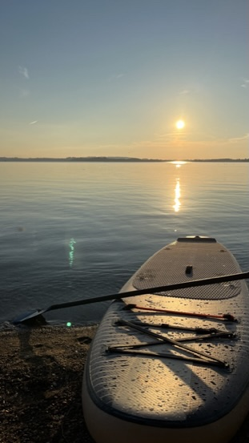
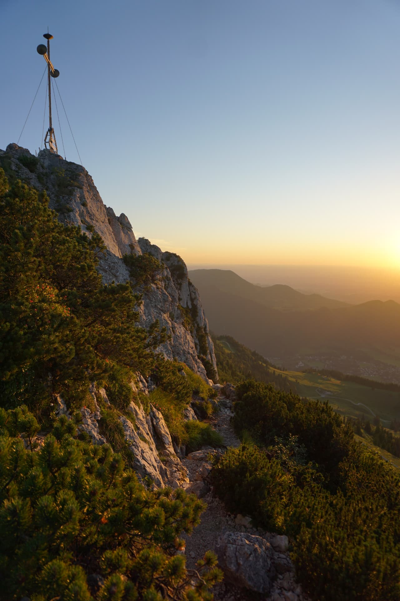
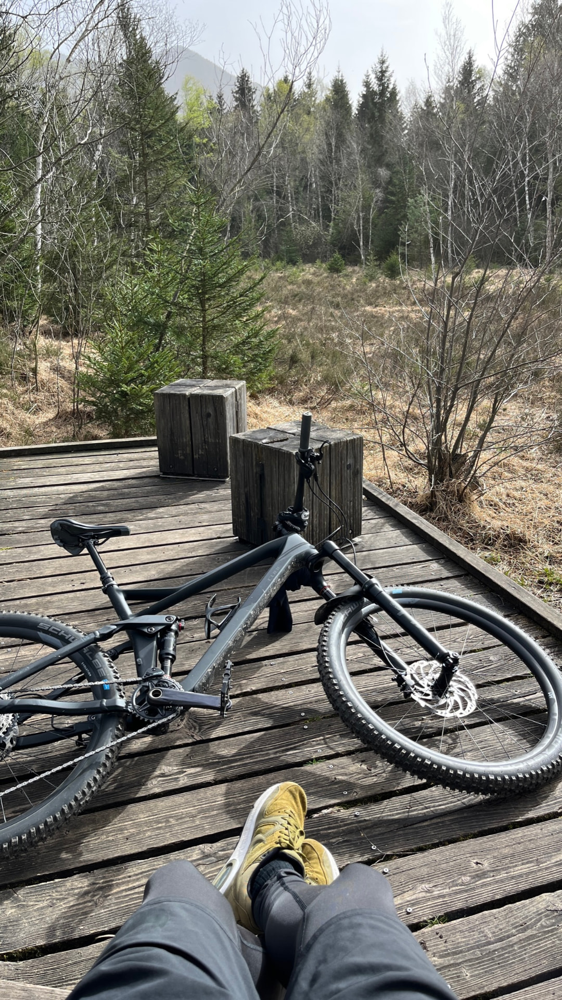
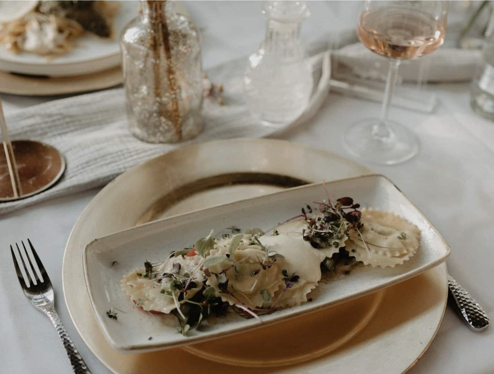

Gästemappe
Reisetipps für Deinen Urlaub am Chiemsee.
Wir wohnen selbst hier im Chiemgau. Alles, was wir unseren Gästen im Bergloft empfehlen, findest Du hier — Berge, Seen, Wirtshäuser und Regentage.

Baden
Baden am Chiemsee: Badeplätze, stille Seen und Boot fahren
Badeplätze am Chiemsee, Alternativen zum Baden im Chiemgau, Boot fahren ab Gstadt und die schönsten Plätze für den Sonnenuntergang — unsere Tipps aus der Gästemappe des Bergloft.

Wandern
Wandern im Chiemgau: Spaziergänge, Almen, Gipfel und Bergtouren
Spazieren gehen, einfache Almwanderungen mit Kindern, Gipfel rund um den Chiemsee, längere Bergtouren und alle Bergbahnen — unsere Wandertipps aus der Gästemappe des Bergloft.

Aktiv & unterwegs
Radfahren, Mountainbike & Ausflüge am Chiemsee
Radrunden um den Chiemsee, Mountainbike-Touren, Golf in Grassau, Canyoning und Kajak in Übersee sowie unsere liebsten Ausflüge zu Herren- und Fraueninsel und nach Salzburg.

Restaurants
Restaurants am Chiemsee: unsere Lieblingsplätze im Chiemgau
Wirtshäuser, Almen, Seeterrassen und Sterneküche in Bernau, Aschau, Prien, Gstadt, Chieming, Grassau, Grabenstätt, Übersee und Schleching — empfohlen von den Gastgebern des Bergloft.

Jedes Wetter
Chiemsee bei Regen, mit Kindern und im Winter
Schlechtwetter-Programm am Chiemsee: Schloss Herrenchiemsee, Salzburg, Thermen und Saunen, Indoorspielplätze, Freizeitparks sowie Skifahren und Rodeln im Chiemgau.
Ferienwohnung Bernau am Chiemsee
Wohne dort, wo Deine Ausflüge beginnen.
Das Bergloft ist eine nachhaltig kernsanierte 3-Zimmer-Dachgeschosswohnung für bis zu 4 Gäste — zwei Balkone mit Bergblick, 15 Gehminuten zum Chiemsee, kostenlose Garage und eine ruhige Sackgassenlage direkt am Bach.